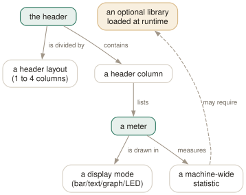

Day 08
The header meters
Reading the coloured segments, and the thirty-odd meters you can put up there instead.
By the end of today you can
- name every coloured segment of the CPU bar, and say what turning on detailed CPU time adds
- read the memory bar's five segments instead of just its overall length
- choose a meter and a display mode for the question you actually have
The bars are stacked, and the stacking is the information
Everybody reads the CPU bar as “how full is it”. The length is the least interesting thing about it: the bar is several kinds of CPU time stacked left to right, and which segment is growing tells you what sort of problem you have.
By default the segments are, in order: low (blue — time spent at a positive nice value), normal (green — ordinary user code), kernel (red — system time), and virt (cyan — hypervisor steal plus guest time, folded together). In monochrome the same four become normal, bold, bold and dim.
Switching on detailed_cpu_time in Setup expands the bar to separate irq (yellow), soft-irq (magenta), steal (cyan), guest (cyan) and io-wait (grey). You can see the difference immediately in text mode:
detailed_cpu_time=0 0: 0.0% sys: 0.0% low: 0.0% vir: 0.0%
detailed_cpu_time=1 0: 0.0% sy: 0.0% ni: 0.0% hi: 0.0% si: 0.0% st: 0.0% gu: 0.0% wa: 0.0%

column_meters_0 and a column_meter_modes_0 line. The dashed aspect is the one that catches people out: a few meters depend on a library loaded at runtime, so the same htop on the same hardware can offer CPU temperatures on one machine and not on another.The memory bar is not a fuel gauge
The memory bar stacks used, shared, compressed, buffers and cache, and the swap bar stacks used, cache and frontswap. Put the Memory meter in text mode and it will tell you the numbers outright:
Mem:61.9G used:9.13G shared:585M compressed:0K buffers:4.69M cache:24.9G available:51.5G
Swp:8.00G used:0K cache:0K frontswap:0K
That available figure is the one worth arguing from. The bar looked more than half full; 51.5 GB of 62 was available, because almost all of the apparent usage was page cache that the kernel will surrender the instant anything asks. A Linux box with empty cache is a Linux box wasting memory.
Thirty-odd meters, four ways to draw them
The Setup screen's “Available meters” list is long and is documented nowhere in the manual page. The useful groups:
- CPU
- Ten different groupings — one combined average, all cores, or the cores split across two or four shorter columns. On a 32-core machine this choice is the difference between a three-line header and a thirty-five-line one.
- Memory
- Memory, Swap, a combined memory-and-swap meter, and
HugePages. - Load and tasks
- Load average, the one-minute load alone, and the Task counter that gives you the processes / threads / kernel-threads / running line.
- Time
Clock,Date,Date and Time,Uptimeand uptime in raw seconds.- System
- A
Systemmeter,Hostname,Battery, and — where libsystemd is present — the number of running, failed and jobs-queued systemd units. - Pressure Stall Information
- Five PSI meters: some-cpu, some-io, full-io, full-irq and some-memory. These are the modern answer to “is this machine actually struggling”, and they are worth more than most of the bars above them.
- Blank
- A spacer. Genuinely useful for lining two header columns up.
Each meter is drawn in one of four modes, and the mode is as much of a decision as the meter:
1 Bar Mem[|||||||||||||||||||||||||| 9.69G/61.9G] 1 line
2 Text Mem:61.9G used:9.12G shared:584M compressed:0K 1 line
3 Graph ⣀⣀⣀⣀⣀⣀⣀⣀⣀⣀⣀⣀⣀⣀⣀⣀⣀⣀⣀⣀⣀⣀⣀⣀⣀⣀⣀⣀⣿ 2 lines
4 LED ┌──╴ ┐ ┌──┐ ┌──┐ ┐ ╶──┐ 3 lines
Layout, and getting the header out of the way
header_layout divides the header into one, two, three or four columns, in fourteen width presets — two_50_50 by default, with everything from 1 column - full width to 4 columns - 25/25/25/25 available. Each column gets its own list of meters, filled top to bottom.
And when you want none of it: # hides the entire header and gives the process list the whole terminal. htop --no-meters starts that way. Neither is in the manual page.
Two more flags worth knowing here. htop -C is monochrome, which is what the segments look like when colour is unavailable — worth seeing once so you can read somebody else's screen. htop -U swaps the unicode braille characters of graph mode for plain ASCII, for terminals and fonts that mangle them.
Today's habit
Spend two minutes deciding what your header should say, before tomorrow makes it permanent. The default — every core as its own bar — is a poor default on any modern machine: it scales with your core count, it is the first thing to eat your screen, and “which of my 32 cores is busy” is a question almost nobody has. A single average CPU bar, memory, swap, and a PSI meter will serve you better.
Tomorrow: the Setup screen in full, and the config file it writes — including the ways htop will overwrite your work if you let it.
New vocabulary
Keys
| Key | Does |
|---|---|
| # | Hide and show the header meters entirely. Not in the manual page. |
| F2SC | Open Setup, where meters are chosen. C is an undocumented alias. |
Commands
| Command | Does |
|---|---|
htop --no-meters | Start with the header hidden. Gives the process list the whole terminal. |
htop -C | Monochrome. The bar segments become bold, normal and dim instead of colours. |
htop -U | ASCII instead of unicode for the graph meters. |
Options
| Option | Does |
|---|---|
detailed_cpu_time | Split the CPU bar into irq, soft-irq, steal, guest and io-wait. Default off. |
header_layout | One to four columns, in fourteen width presets. Default two_50_50. |
column_meters_0 | The meters in the first header column, space-separated. |
column_meter_modes_0 | Their display modes: 1 bar, 2 text, 3 graph, 4 LED. |
Drillsdo these in a real terminal, today
Self-check
Answer out loud first, then unfold.
Your CPU bar is nearly full, but the process list shows nothing using much CPU and the machine feels fine. Which segment should you look at, and what would it mean?
Most likely the grey io-wait segment, which only appears as its own colour once Detailed CPU time is switched on. io-wait is not work — it is a core sitting idle because everything runnable on it is blocked waiting for a disk. The CPU is not busy; it is bored.
The other candidate is cyan steal, which on a VM means the hypervisor gave your vCPU's time to somebody else. That one is genuinely lost time and no amount of tuning inside your guest will recover it. Both are invisible by default, folded into the main segments — which is exactly why the default bar can look busy while nothing is running.
A colleague reports “the server is using 52 of its 62 GB of RAM, we need to order more”. What do you check before agreeing?
The composition of the memory bar, not its length. The bar stacks used, shared, compressed, buffers and cache, and on a healthy long-running Linux box the majority of it is usually cache — file contents the kernel is keeping around because the RAM was otherwise idle.
Cache is not consumption. The kernel evicts it instantly when anything wants real memory, which is why the text-mode Memory meter also prints an available figure — on the machine this course was checked against, 9.13G used and 24.9G cache came out as 51.5G available of 61.9G. That available number is the one to put in the capacity conversation.
You put the Memory meter on screen four times in four different display modes. What do you get, and when is each worth the space?
Bar (mode 1) shows proportions at a glance and costs one line. Text (mode 2) costs one line and gives you the actual breakdown — used, shared, compressed, buffers, cache, available — which the bar can only imply.
Graph (mode 3) costs two lines and is the only mode with any memory of the past: it is a sparkline, so it answers “is this climbing?”, which is almost always the real question. LED (mode 4) costs three lines and is legible across a room — for a wall display, and nothing else.
The manual page's METERS section reads “Default CPU bar segments ( use text attributes instead of hues:”. What happened, and what should it say?
Words have been lost in the source — the parenthesis opens and never closes, and the subject of “use text attributes” has gone missing. It should say something like “in monochrome mode, segments use text attributes instead of hues”, which is what the rest of the section then describes segment by segment.
It is a typesetting bug rather than a factual one, and the surrounding content is correct — the segment list and the monochrome mappings both match the binary. It is worth noticing only because it is a reminder that the live legend on the F1 screen is generated from the code, and is therefore the thing to trust.
Cheat sheet
CPU bar, default: low(nice) normal(user) kernel(sys) virt(steal+guest)
+ detailed_cpu_time: irq soft-irq steal guest io-wait <- split out
text mode shows: sys low vir -> detailed: sy ni hi si st gu wa
Memory bar: used shared compressed buffers cache (text mode adds 'available')
Swap bar: used cache frontswap
display modes: 1 Bar (1 line) 2 Text (1 line)
3 Graph (2 lines, a sparkline -- the only one with history)
4 LED (3 lines, legible across a room)
# hide/show the whole header [not in man]
htop --no-meters start with it hidden
htop -C monochrome: bold / normal / dim instead of hues
F1 the LIVE colour legend for your scheme -- trust this over any table
A nearly full memory bar is usually mostly page cache, and cache is free. Read the available figure from the text-mode Memory meter before anyone orders RAM.
Everything through Day 08
Keys
| Key | Does |
|---|---|
| Ctrl-L | Redraw the screen and recalculate, without waiting for the next tick. |
| Z | Pause and resume sampling. The screen freezes; the machine does not. |
| F10q | Quit. This is also the only exit that saves your settings. |
| UpDown | Move the selection one row. Alt-k and Alt-j do the same. |
| PgUpPgDn | Move the selection a screenful at a time. |
| HomeEnd | Jump to the first or the last process in the list. |
| LeftRight | Scroll the whole list sideways. Also Alt-h and Alt-l. |
| Ctrl-A^ | Scroll back to the start of the selected process's line. |
| Ctrl-E$ | Scroll to the end of the selected process's line. |
| Alt-UpAlt-Down | Pan the view without moving the selection. Shift-Up/Shift-Down too, if your terminal lets them through. |
| p | Toggle full program paths in Command. |
| m | Toggle merging exe, comm and cmdline into Command. |
| F3/ | Incremental search: move the selection to the next match. Does not hide anything. |
| F3 | While searching: jump to the next match. Shift-F3 goes backwards. |
| F4\ | Incremental filter: hide every row that does not match. |
| Enter | In the filter prompt: keep the filter and put the prompt away. |
| Esc | In the filter prompt: clear the filter. In search: cancel it. |
| u | Open the user menu and show only one user's processes. |
| Digits | Type a PID and the selection jumps to it. Silently — there is no prompt. |
| F6><. | Open the “Sort by” menu. All three punctuation aliases work. |
| I | Invert the sort direction. The arrow in the heading flips. |
| NPMT | Sort by PID, CPU%, MEM% and TIME. The top(1) compatibility keys. |
| F5t | Toggle tree view. The F5 label changes to List while you are in it. |
| +- | Expand or collapse the selected subtree. |
| * | Expand or collapse every subtree at once. |
| F | Follow: pin the selection to this process wherever it moves. |
| Space | Tag or untag the selected process. Tagged rows stay tagged until you clear them. |
| c | Tag the selected process and all of its children. |
| U | Untag everything. The most important key on this page. |
| F9k | Open the signal menu. Defaults to 15 SIGTERM. |
| F7] | Raise priority — lower the nice value. Root only. |
| F8[ | Lower priority — raise the nice value. Anyone can do this to their own. |
| } | Raise the autogroup priority. Shift-F7. Root only. |
| { | Lower the autogroup priority. Shift-F8. |
| a | Set CPU affinity: tick the CPUs this process may run on. |
| i | Set the I/O scheduling class and priority. Not in the manual page. |
| Y | Set the scheduling policy. Not in the manual page either. |
| l | List open files, by running lsof against the selected process. |
| s | Trace system calls, by running strace against it. |
| e | Show the process's environment. Not in the manual page. |
| w | Show the command line wrapped across the whole screen. |
| x | Show the process's active file locks. |
| b | Show a backtrace. Only if htop was compiled with it, which it usually was not. |
| F5 | Refresh the open screen. F3 and F4 search and filter it. |
| F8 | In the strace screen: toggle auto-scroll. F9 stops the trace. |
| # | Hide and show the header meters entirely. Not in the manual page. |
| F2SC | Open Setup, where meters are chosen. C is an undocumented alias. |
Commands
| Command | Does |
|---|---|
htop | Start htop, reading ~/.config/htop/htoprc once at startup. |
htop -d 10 | Sample every 10 tenths of a second. Clamped to the range 1–100. |
htop -n 5 | Draw five frames, then exit on its own. Absent from the manual page. |
htop -V | Print the version. The -v in the SYNOPSIS does not exist. |
htop -F chrome | Start with the filter already applied. Multiple terms: -F 'nginx|php'. |
htop -p 1,843 | Show only these PIDs, and nothing else ever appears. |
htop -u | Show only your own processes. |
htop -u postgres | Show one user's processes. A numeric UID works too. |
htop -s PERCENT_MEM | Start sorted by a column. Forces list view. |
htop -s PERCENT_MEM -t | Sorted and in tree view — the one way to have both. |
htop --sort-key help | Print every sortable column name and what it means. |
htop -t=soft | Tree view with a stable cursor line. classic, soft and hard, or 0/1/2. |
htop --readonly | Disable every process- and system-changing feature for this session. |
htop --no-meters | Start with the header hidden. Gives the process list the whole terminal. |
htop -C | Monochrome. The bar segments become bold, normal and dim instead of colours. |
htop -U | ASCII instead of unicode for the graph meters. |
Options
| Option | Does |
|---|---|
delay | Tenths of a second between samples in htoprc. Default 15, i.e. 1.5 s. |
M_VIRT | Address space the process has mapped. VIRT. Mostly promises, not memory. |
M_RESIDENT | Pages actually in RAM, shared ones counted in full. RES. |
M_SHARE | The part of RES that other processes also map. SHR. |
M_PRIV | Resident minus shared — what dies with the process. PRIV, a default column. |
M_SWAP | Pages of this process pushed out to swap. SWAP. |
M_PSS | Resident, but each shared page divided by its number of sharers. PSS. |
M_PSSWP | The same proportional treatment for swapped-out pages. PSSWP. |
M_EPSS | PSS plus PSSWP: the whole footprint, proportionally. EPSS. |
PERCENT_MEM | RES as a share of total RAM. MEM% — and it inherits RES's double counting. |
detailed_cpu_time | Split the CPU bar into irq, soft-irq, steal, guest and io-wait. Default off. |
header_layout | One to four columns, in fourteen width presets. Default two_50_50. |
column_meters_0 | The meters in the first header column, space-separated. |
column_meter_modes_0 | Their display modes: 1 bar, 2 text, 3 graph, 4 LED. |